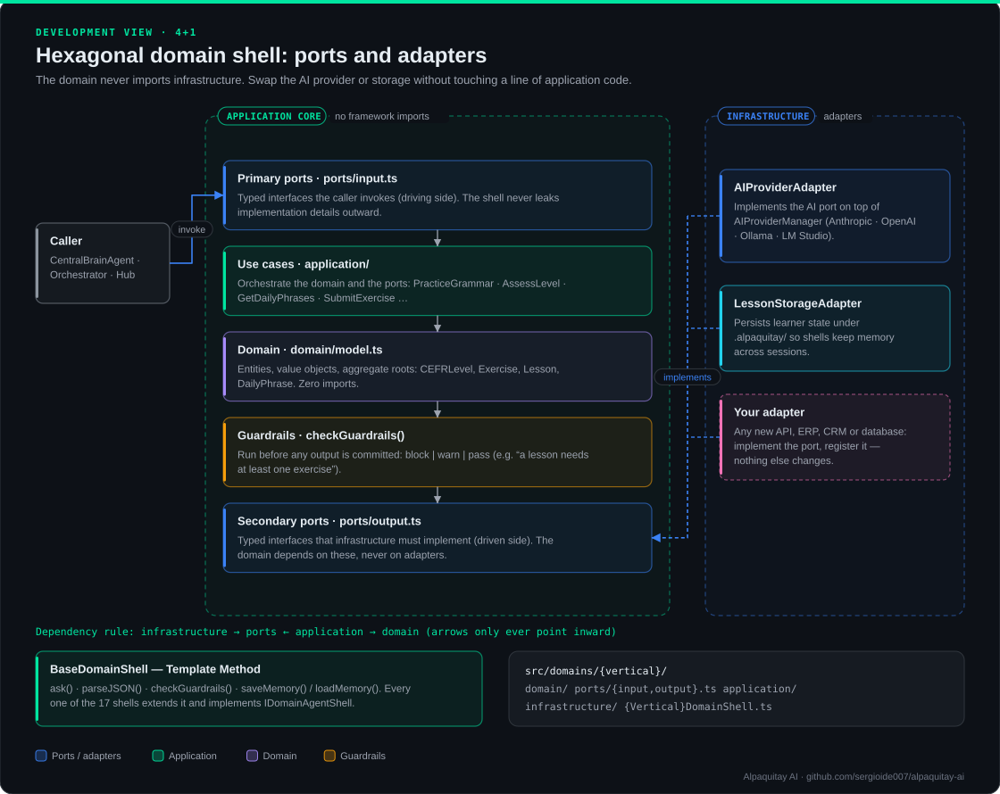
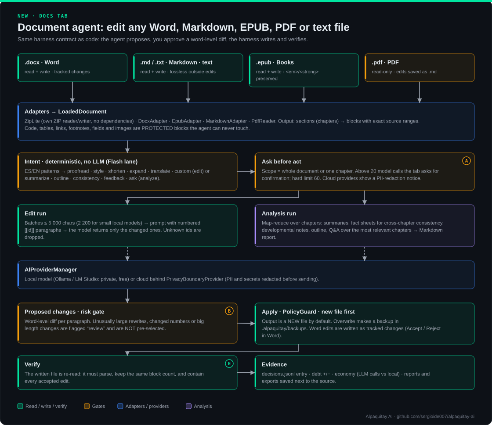

Capítulo 13
Diagramas de arquitectura
Estos son los diagramas oficiales de Alpaquitay AI. Haz clic en cualquiera para verlo a pantalla completa.
Están en formato SVG (editables) y PNG en docs/diagrams/, generados con los scripts de Python de
docs/diagrams/src/.
1. La tubería del arnés

Cómo recorre una petición el arnés: se percibe el proyecto, se elige un carril, se previsualiza, se protege, se verifica y se registra. Explicado en Cómo piensa el arnés.
2. La extensión por dentro

Los componentes del extension host: la raíz de composición, el Hub, el núcleo del arnés, las capas de capacidades (proveedores, herramientas, skills, documentos, motor local) y los sistemas externos con los que habla.
3. Secuencia de una tarea SDD

Lo que pasa entre arrastrar una tarjeta a In Progress y que llegue a Done. Explicado en Work.
4. Compuertas del SDLC

Las seis fases y lo que exige cada una para avanzar. Explicado en Cómo piensa el arnés.
5. Proveedores y límite de privacidad

Cómo se elige el proveedor y qué pasa con tu texto en cada camino. Explicado en Proveedores.
6. Orquestación de especialistas

El agente central (privacidad, recuperación de conocimiento, orquestación y refinamiento), el orquestador y el registro de especialistas. Explicado en Agentes.
7. Especialista hexagonal


La arquitectura de puertos y adaptadores de cada especialista: el dominio nunca depende de la infraestructura.
8. Inferencia de arquitectura

De qué pruebas sale el diagrama de la pestaña Architecture. Explicado en Arquitectura.
9. Clean Architecture generada

Las estructuras que genera el constructor de proyectos para Java Spring y React.
10. Agente de documentos


El flujo de la pestaña Docs, de la lectura del formato a la verificación del archivo escrito. Explicado en Docs.
11. Motor local

Cómo se descarga, verifica, guarda y ejecuta el modelo en tu GPU. Explicado en Motor local.